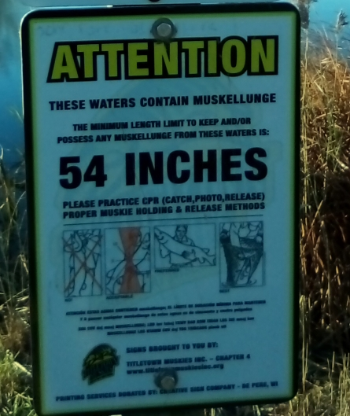
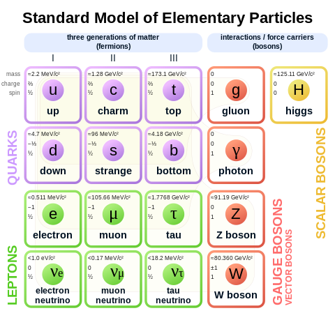

Acoustics
Sound is a vibration of particles. Sound travels (and attenuates?) in solids the fastest, because solids have the most particles.
[attenuate: reduce, weaken]
onlinemictest.com, a pitch detector
You see what you want to see,
hear what you want to hear,
read what you read,
weather, far or near.
learn.virtualspeech.com
I have super-sensitive hearing. Don't be jealous. It's a disability.
I'm afraid of heights and I learned to ride a bike late.
Botany
"So now, my man,
you must do your best,
to keep up your habit,
until your arrest,"
~ "King Heroin"
cocaine
"I wanna roll you
way down in the fields where you were born,
I wanna roll you
when I'm ragged and forlorn,"
~ Spin Doctors, "Mary Jane"
Chemistry
Chemistry is the central science!
"Now, Fatty, he's a hell of a guy,
but he sweats like a dancing mule,
He likes to hang out at Checker Gas
with the Chets he knew from hiiiigh school,
He sold enough crystal meth to buy a stepside truck,
but if you ask me twice I'd say the boy ain't worth a ... ,"
~ Primus, "The Air is Getting Slippery"
containment
He's talking about the importance of air, but he sounds like he doesn't breathe.
Birthing Instincts
"The problem is ... hospitals don't make money doing nothing. They don't know how to leave a patient [client] alone."
Yellowstone Grand Prismatic Spring
"People are never happy. Never. Some people go to India - they want to find the mystery of life. I'm still trying to figure out how to start my car." ~ Rodney Dangerfield
hypothesis: long-term vegetarianism can make you look like a carrot
Super Kooper
They say you can live a normal life with HIV and even die a normal death. You just have to learn a little more about medicine.
Is there such a thing as half an orgasm?
All humans are the same species.
All humans have multiple intelligences.
How did life start? (How was it created?)
abiogenesis: life from non-life
It's possible that the tremendous amounts of heat and pressure at the core of Earth created the first microbes.
Abiogenesis is NOT synthetic biology. Synthetic biology is the attempt to bring back to life something that once was alive. (Frankensteinian stuff.) Abiogenesis is the CREATION of a microbe(s) from parts which we consider not to have been part of a recently living thing.
(basically, particles such as electrons, quarks, muons, gluons, carbon atoms, etc.)
Some people can throw their voices. Can they throw their hearing?
Did anything similar to the date-rape drug exist 2,000 years ago?
apex: top
cold-blooded: having an internal temperature that varies with the external temperature
cosmopolitan: widespread; Orcas are cosmopolitan. They are present in every ocean.
3-2-1-Contact
Everyone over 40 has some form of heart disease,
because heart disease is ... a fuzzy diagnosis.
lab-grown meat
" ... license to love,
insurance to hold,
melt all your memories
and change
into gold,"
~ Sade, Ray St. John, "Smooth Operator"
hypothesis: The brain/body continues to create new cells until we die, just not enough for us to live forever.
hypothesis: Cars were invented out of the fear of horses.
Bialik time. Here we go, babe. From my neuroscience book:
nigral
dopaminergic
cupular
micturition (urination!)
hippocampal
microglia
these are actual words!
GABAergic
Manduca sexta (tobacco hawk moth)
corticoid
codon
consanginous
dihydrotestosterone
amnesic
anterograde
rostral-caudal
trigeminal
subthalamic
laminin
fibronectin
Computer Science
Excellent_Animation_Tutorial_!
YouTubers: "Team Miracles" ... Team Miracles
Here is the file it creates:
about as fancy as animations get


The Y coord should now work even after scrolling.
The winning code is shown below (I looked for simple examples.)
Thank you developer.mozilla.org.
function getYPosition()
{
var top = window.pageYOffset || document.documentElement.scrollTop;
return top;
}
var y = ((event.clientY - xy.offsetTop) + getYPosition());
Also thank you stackoverflow.com.
holography
Kimmer's
I wanted to see if some embed code from Wikipedia worked:

From Wikipedia: "scientific visualization"
(a PET scan of a patient injected with a "tracer" (?) substance to identify tumors)
pixel: "picture element", the smallest addressable element of an image (or a device display area)
"When all three primary colors are combined at each pixel, this allows for as many as 2^(8*3) or 16,777,216 different colors, or 'true color.' This is referred to as 24 bits per pixel since each pixel is composed of three 8-bit color channels."
CambridgeInColor
Color is a property of light. If you change the particle configuration of an object so that it appears to be a different color, you have changed the way (frequency) light is reflected from that object. (What color would it be without any light?)
hologram: a three-dimensional image formed by the interference (crossing) of light beams
holography: the making of holograms
holograph: a document that is wholly written by the person whose signature it bears
histogram: similar to a bar chart
heuristics: a type of learning, I think
A 3-dimensional array:

(A deck of cards would only be a 2-d array. Color is included in suits.)

Let me know if there are any residuals!

4. (not necessarily an error, sometimes just a "leftover")
If R came from S, will Q come from R?
R
Python
We don't talk about all that can go wrong!
sans
cwe
"Hope for the best, but plan for the worst."
Wireless signal blocking(?):
highspeedoptions
signalboosters
sciencebuddies
Wikipedia "Lead"
{kind=link}

Let me know if there are any problemos!

Enjoy!
Ye old geeky number guessing game: (still need to clear board if player selects same number game)
Pick a number between 1 and
1st guess:
2nd guess:
3rd guess:
4th guess:
5th guess:
6th guess:
7th guess:
8th guess:
9th guess:
10th guess:
Is your number or ?

1 not necessarily meaningless, but a guess
typical lifespan of the developer, software engineer or whatever you wanna call it:
before age 20, loves coding, can't get enough, amount of coding coded: 125%
around age 40, neutral about coding, but has gotten frustrated with bad trends, amount of coding coded: 50%
after age 60, dislikes coding, has found other things to do, amount of coding coded: -25%
Fotos of faces,
lined up in the queue,
Trails and traces,
output depending
on the input of you.
Is one datum a pattern?
Computer science is much more than a field of study. It is a field of tricks.
The Too-Much-Information Age: "I can name that tune in 0 notes."
pedantic: arrogant
wordle
women-owned AI companies
orbofi.com
medium.com
R2-D2 impression
"Are you angry, U.N.?"
~ Name That Movie, starring Robert Carradine and Anthony Edwards
An excellent Blender tutorial:
Keelan Jon
Earth Science
No matter how deeply rural you are,
how widely agricultural you are
or how much of a big StudMuffin you think you are,
people are going to wonder
why ON EARTH
do you
have
ten
kids?
To where does your toilet flush?

"The fish of 10,000 casts"
From where does your drinking water come?
If you build your house out in the middle of nowhere,
from where will your electricity come?
(Should this post be on the social page?)
"There is the same amount of water on Earth now as there has always been."
James Lovelock
Eekonomics
(Is economics a science?)
The American Dream is rarely achieved alone and that's not just because of the financial difficulty. The one bit of information your boss and co-workers retain about you is whether you have a wife and kids or you're a complete loner.
hypothesis: restaurants get better meats than grocery stores
(perhaps the processing is different?)
The middle ground is very hard to achieve sociologically. On one hand, I wouldn't want just one company to dominate a market. That monopoly turns into a utility, which almost immediately turns into a government, perhaps? On the other hand, a flooded market obviously drowns, although I have a zest for variety, diversity and beer.
If one country dominates the manufacturing of a certain type of product, where do we look for a change? Nearby countries? If you've been following my work for awhile, you probably know that I'm thinking about Japan - cars and computing gadgets. (Also low poverty and low crime.) Why aren't all of our cars and computing gadgets from Japan? I'm sure there are many factors, not the least of which is the powerful loyalty of Americans. People are very social and will often choose whatever product gets them friends "on the right side." Furthermore, any intellectual concept, whether sociological or psychological, probably cannot be just a one-way road. It isn't simply a matter of the best groups or individuals rising to the top. (At the same time, who are those powerful people hurting?) There is plenty of evil in our world to combat, although ideally we could almost eliminate evil. How do you combat negativity while remaining positive? The middle ground is very hard to achieve.
I crave new ideas. I think this is more of a psychological concept than a sociological concept. My point is to not be heavily influenced by pop trends or promises of "new deals." (omg, this is an election year!) Look back on history and see the similarities among eras, the social stagnation and all the problems that have just been repeated over and over and over again. See extreme language as a warning sign. Find your way out, then find your way back in, because it ain't over until the coma ends. And remember, according to Stephen Coldbeer, the word "Japs" can be used in a politically correct way if it is done to save ink.
A rich country takes its humor very seriously.
Flair
Y'all ready for the Crash of '29?
Is the freemium business model only good for Big Business?
What makes a country rich?
Big Oil:
companiesmarketcap.com
eia.gov
investopedia
Wikipedia
Is socio-economic oppression exclusively American?
Sell your soul,
a part of your mind,
professional,
confessional,
monetary grind.
In my opinion, most people are to the left. Always have been. Always will be. How did I come to this opinion? ... Why did we lose the Vietnam War?
Who would you rather hire:
* someone who wants a job
* someone who needs a job
legal prostitution, Does that make a difference?
Geometry
(Is math a science? Or is it maybe a humanity? An accessory?)
"I'd like two 50/50s."
~ Norm MacDonald on "Who Wants To Be A Millionaire"
The more guesses, the better chance of guessing right.
A man with a 25-inch penis goes to a doctor to see if the penis can be reduced in size. The doctor says, "Go to the frog in the woods and ask the frog to marry you. Each time the frog says no, you will lose 5 inches off your penis."
So the guy goes to the frog in the woods and asks, "Frog, will you marry me?"
The frog says, "No."
Poof. The guy loses 5 inches off his penis.
The guy asks again, "Frog, will you marry me?"
The frog says, "No."
Poof. The guy loses another 5 inches off his penis.
The guy thinks, "Hhhmmmm, 15 inches is still too big, but 10 would be perfect."
So he asks the frog one more time, "Frog, will you marry me?"
The frog says, "I told you, NO! NO! NO!"
"There are three sides to every story."
Dear Dr. Newton,
Come hither, young lad,
and we shall plan how to set things straight
with the Queen and the masses.
Your comrade-in-crime,
Dr. Liebniz
Hey, baby. How much?
Can we do a 90º here, dear?
Some neat stuff on Wikipedia:
cycloid:

Zorgit, CC BY-SA 3.0, via Wikimedia Commons
"Now everything’s a little upside-down,
as a matter of fact, the wheels have stopped,
what’s good is bad,
what’s bad is good,
you’ll find out when you reach the top,
you’re on the bottom,"
~ Bob Dylan
astroid:

en:w:User:Sam Derbyshire, Public domain, via Wikimedia Commons
hypocycloid:

Sam Derbyshire at the English Wikipedia, CC BY-SA 3.0
Deltoid curves
gallery of curves
3-d printing
bindi: a decorative mark worn in the middle of the forehead by Indian women
Cyclops: a one-eyed giant
epicanthic: "above" + "corner"; the epicanthic fold = "Asian eyes"
monopod: mythical creature with only one leg and therefore only one foot
numerology: the puns of math
$2300 chair
Physics
imho, physics is all about particles. What makes one particle more valuable than another?

quarks, leptons, gauge bosons, scalar bosons
some abstract notes about particles:
There are two types of particles:
Those that are already there (around you)
and those that were shot there.
those that are already there, which are usually capable of movement,
and those that were emitted by a source.
sound vs. light (?)
Can one particle be both types?
composite vs. elementary?
hypofesis: claustrophobia involves breathing, nitrogen fixation and humans' tendency to group together and seek a scapegoat
hypofesis: a speech impediment is actually a hearing impediment
hypofesis: dyslexia is a vision impediment
Light is not a wave. Light is a particle that moves in the form of a wave.
Bielzebub_backflip
Bean counters aren't just employed in the accounting business!
hypothesis: the heart is the most important muscle of the body
(well-detailed abs without cardio is a warning sign of ill health?)
reverse filter, lets larger objects pass, traps smaller objects:
atlas.com
journal: Science Advances
Penn State
spoiler alert ?
car engine, Twitter page: cooltechtipz
"'Time is just a concept,' says Einstein's kid, the dunce,
'people's way of keeping everything from happening at once,
Overtake the light, time is in your sight,
and black holes bend the beams so
nothing's where it seems and
finding out the truth could take you months.' "
~ Spin Doctors, "Someday All This Will Be Road"
Sounds of the Geiger counter:
findsounds.com
nerdfighteria.info
KenGriffeyJr
Worldwide E consumption:
elements.visualcapitalist.com
ourworldindata
The further you pull back a slingshot ... ?
What is the difference between positive and negative feedback?
Las Vegas Sphere
science girl on Twitter
Could this be an object far away that causes some astronomers to think the universe has a border?
zenith: top
Many methods that work well in theory can be exploited in practice. In fact, you can probably count on exploitation.
"Logic only eliminates the wrong answer. It does not provide the right answer."
Is "good" simply the absence of "bad"?
Is auto repair a dying industry? Please discuss: ___________________________ ____________________________________________________________________________ ____________________________________________________________________________ ____________________________________________________________________________ ____________________________________________________________________________
hydraulic lifts
installing a 10,000 lb. vehicle hoist
hypothesis: being underweight for too long can cause the head to be distended
hypothesis: fat and muscle can live in harmony
hypothesis: exceptional height can cause the heart to be disproportionately stretched/compressed
hypothesis: "runner's high" during a marathon can induce narcolepsy
Zoology
I'm afraid of horses and my daughter's ex-mom.
catathymia: the state of being ruled by emotion
MilwaukeeZoo.org
ichthyology: the study of fish
Shedd Aquarium
I don't want the body of a bodybuilder.
I don't want the body of a marathoner.
I want the body of a sprinter.
women's 400m
hypothesis: vasectomy can cause increased height, especially in horses
A unique tiktok:
The Trimates: Fossey, Goodall, Galdikas
Horses, bulls, whales, gorillas - the biggest of their kind and yet ... mostly vegetarian. How did this happen?
"Wild horses couldn't drag me away,"
~ Jagger/Richards